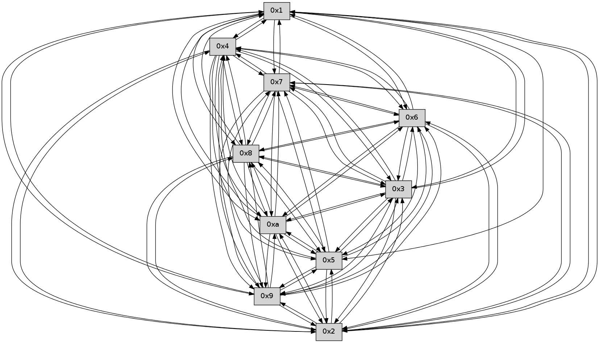

>> << IDX [start] -100 -25 -5 +0 +5 +25 +100 [235.291322947]
 Previous packets
----------------------------------------------------------------------
230.562529 beacon01(faad) #0 coord=01,02,03,04,05,06,07,0a,09,08 cycle=688.0ms assoc
-- color-indic=0 64 35 1a
230.572510 beacon02(faad) #0 coord=01,02,03,04,05,06,07,0a,09,08 cycle=688.0ms assoc 64 a6 2b
230.582510 beacon03(faad) #0 coord=01,02,03,04,05,06,07,0a,09,08 cycle=688.0ms assoc 64 dc 66
230.592513 beacon04(faad) #0 coord=01,02,03,04,05,06,07,0a,09,08 cycle=688.0ms assoc 64 ab 8c
230.602512 beacon05(faad) #0 coord=01,02,03,04,05,06,07,0a,09,08 cycle=688.0ms assoc 64 d1 c1
230.612511 beacon06(faad) #0 coord=01,02,03,04,05,06,07,0a,09,08 cycle=688.0ms assoc 64 5f 16
230.622514 beacon07(faad) #0 coord=01,02,03,04,05,06,07,0a,09,08 cycle=688.0ms assoc 64 25 5b
230.632517 beacon0a(faad) #0 coord=01,02,03,04,05,06,07,0a,09,08 cycle=688.0ms assoc 64 54 50
230.642516 beacon09(faad) #0 coord=01,02,03,04,05,06,07,0a,09,08 cycle=688.0ms assoc 64 da 87
230.652518 beacon08(faad) #0 coord=01,02,03,04,05,06,07,0a,09,08 cycle=688.0ms assoc 64 a0 ca
230.663980 [Hello(3): seq=152 sym=5,7,6,4,2,8,9,10,1 sysInfo= stat=5:4,0,0,0/7:5,0,0,0/6:1,0,0,0/4:15,0,0,0/2:3,0,0,0/8:9,0,0,0/9:1,0,0,0/10:6,0,0,0/1:9,0,0,0]
230.667003 [Hello(4): seq=152 sym=5,7,6,2,3,9,8,10,1 sysInfo= stat=5:1,0,0,0/7:13,0,0,0/6:0,0,0,0/2:4,0,0,0/3:0,0,0,0/9:1,0,0,0/8:4,0,0,0/10:3,0,0,0/1:0,0,0,0]
230.670521 [Hello(2): seq=149 sym=4,5,7,6,3,9,8,10,1 sysInfo= stat=4:13,0,0,0/5:0,0,0,0/7:13,0,0,0/6:2,0,0,0/3:14,0,0,0/9:3,0,0,0/8:3,0,0,0/10:13,0,0,0/1:15,0,0,0]
230.676447 [Hello(1): seq=60 sym=4,2,9,5,10,3,8,6,7 sysInfo= stat=4:13,0,0,0/2:2,0,0,0/9:15,0,0,0/5:3,0,0,0/10:11,0,0,0/3:15,0,0,0/8:13,0,0,0/6:4,0,0,0/7:4,0,0,0]
230.679866 [Hello(5): seq=152 sym=7,6,4,2,3,9,8,10,1 sysInfo= stat=7:7,0,0,0/6:6,0,0,0/4:13,0,0,0/2:11,0,0,0/3:5,0,0,0/9:0,0,0,0/8:10,0,0,0/10:2,0,0,0/1:5,0,0,0]
----------------------------------------------------------------------
231.350663 beacon01(faad) #0 coord=01,02,03,04,05,06,07,0a,09,08 cycle=688.0ms assoc
-- color-indic=0 64 89 1f
231.360646 beacon02(faad) #0 coord=01,02,03,04,05,06,07,0a,09,08 cycle=688.0ms assoc 64 1a 2e
231.370645 beacon03(faad) #0 coord=01,02,03,04,05,06,07,0a,09,08 cycle=688.0ms assoc 64 60 63
231.380647 beacon04(faad) #0 coord=01,02,03,04,05,06,07,0a,09,08 cycle=688.0ms assoc 64 17 89
231.390646 beacon05(faad) #0 coord=01,02,03,04,05,06,07,0a,09,08 cycle=688.0ms assoc 64 6d c4
231.400647 beacon06(faad) #0 coord=01,02,03,04,05,06,07,0a,09,08 cycle=688.0ms assoc 64 e3 13
231.410647 beacon07(faad) #0 coord=01,02,03,04,05,06,07,0a,09,08 cycle=688.0ms assoc 64 99 5e
231.420651 beacon0a(faad) #0 coord=01,02,03,04,05,06,07,0a,09,08 cycle=688.0ms assoc 64 e8 55
231.430657 beacon09(faad) #0 coord=01,02,03,04,05,06,07,0a,09,08 cycle=688.0ms assoc 64 66 82
231.440651 beacon08(faad) #0 coord=01,02,03,04,05,06,07,0a,09,08 cycle=688.0ms assoc 64 1c cf
231.451805 [Hello(10): seq=84 sym=6,3,2,5,9,8,7,4,1 sysInfo= stat=6:15,0,0,0/3:10,0,0,0/2:11,0,0,0/5:14,0,0,0/9:14,0,0,0/8:13,0,0,0/7:14,0,0,0/4:8,0,0,0/1:5,0,0,0]
231.455789 [Hello(9): seq=95 sym=5,2,3,4,7,6,8,10,1 sysInfo= stat=5:1,0,0,0/2:1,0,0,0/3:6,0,0,0/4:12,0,0,0/7:2,0,0,0/6:12,0,0,0/8:11,0,0,0/10:8,0,0,0/1:14,0,0,0]
231.458326 [Hello(7): seq=152 sym=2,3,5,6,4,8,9,10,1 sysInfo= stat=2:9,0,0,0/3:10,0,0,0/5:7,0,0,0/6:7,0,0,0/4:12,0,0,0/8:14,0,0,0/9:15,0,0,0/10:9,0,0,0/1:1,0,0,0]
231.468649 [Hello(6): seq=152 sym=2,3,5,4,7,9,8,10,1 sysInfo= stat=2:14,0,0,0/3:10,0,0,0/5:4,0,0,0/4:1,0,0,0/7:13,0,0,0/9:1,0,0,0/8:2,0,0,0/10:15,0,0,0/1:14,0,0,0]
----------------------------------------------------------------------
232.138796 beacon01(faad) #0 coord=01,02,03,04,05,06,07,0a,09,08 cycle=688.0ms assoc
-- color-indic=0 64 5d 2a
232.148779 beacon02(faad) #0 coord=01,02,03,04,05,06,07,0a,09,08 cycle=688.0ms assoc 64 ce 1b
232.158778 beacon03(faad) #0 coord=01,02,03,04,05,06,07,0a,09,08 cycle=688.0ms assoc 64 b4 56
232.168778 beacon04(faad) #0 coord=01,02,03,04,05,06,07,0a,09,08 cycle=688.0ms assoc 64 c3 bc
232.178777 beacon05(faad) #0 coord=01,02,03,04,05,06,07,0a,09,08 cycle=688.0ms assoc 64 b9 f1
232.188778 beacon06(faad) #0 coord=01,02,03,04,05,06,07,0a,09,08 cycle=688.0ms assoc 64 37 26
232.198779 beacon07(faad) #0 coord=01,02,03,04,05,06,07,0a,09,08 cycle=688.0ms assoc 64 4d 6b
232.208784 beacon0a(faad) #0 coord=01,02,03,04,05,06,07,0a,09,08 cycle=688.0ms assoc 64 3c 60
232.218784 beacon09(faad) #0 coord=01,02,03,04,05,06,07,0a,09,08 cycle=688.0ms assoc 64 b2 b7
232.228784 beacon08(faad) #0 coord=01,02,03,04,05,06,07,0a,09,08 cycle=688.0ms assoc 64 c8 fa
232.240282 [Hello(1): seq=61 sym=4,2,9,5,10,3,8,6,7 sysInfo= stat=4:13,0,0,0/2:2,0,0,0/9:0,0,0,0/5:4,0,0,0/10:12,0,0,0/3:15,0,0,0/8:13,0,0,0/6:5,0,0,0/7:5,0,0,0]
232.244044 [Hello(2): seq=150 sym=4,5,7,6,3,9,8,10,1 sysInfo= stat=4:13,0,0,0/5:1,0,0,0/7:14,0,0,0/6:3,0,0,0/3:14,0,0,0/9:4,0,0,0/8:3,0,0,0/10:14,0,0,0/1:0,0,0,0]
232.246600 [Hello(3): seq=153 sym=5,7,6,4,2,8,9,10,1 sysInfo= stat=5:5,0,0,0/7:6,0,0,0/6:2,0,0,0/4:0,0,0,0/2:4,0,0,0/8:9,0,0,0/9:2,0,0,0/10:7,0,0,0/1:10,0,0,0]
232.251713 [Hello(5): seq=153 sym=7,6,4,2,3,9,8,10,1 sysInfo= stat=7:8,0,0,0/6:7,0,0,0/4:13,0,0,0/2:11,0,0,0/3:5,0,0,0/9:1,0,0,0/8:11,0,0,0/10:2,0,0,0/1:5,0,0,0]
232.257090 [Hello(4): seq=153 sym=5,7,6,2,3,9,8,10,1 sysInfo= stat=5:2,0,0,0/7:14,0,0,0/6:1,0,0,0/2:5,0,0,0/3:0,0,0,0/9:2,0,0,0/8:4,0,0,0/10:4,0,0,0/1:1,0,0,0]
----------------------------------------------------------------------
232.926927 beacon01(faad) #0 coord=01,02,03,04,05,06,07,0a,09,08 cycle=688.0ms assoc
-- color-indic=0 64 e1 2f
232.936909 beacon02(faad) #0 coord=01,02,03,04,05,06,07,0a,09,08 cycle=688.0ms assoc 64 72 1e
232.946909 beacon03(faad) #0 coord=01,02,03,04,05,06,07,0a,09,08 cycle=688.0ms assoc 64 08 53
232.956910 beacon04(faad) #0 coord=01,02,03,04,05,06,07,0a,09,08 cycle=688.0ms assoc 64 7f b9
232.966910 beacon05(faad) #0 coord=01,02,03,04,05,06,07,0a,09,08 cycle=688.0ms assoc 64 05 f4
232.976911 beacon06(faad) #0 coord=01,02,03,04,05,06,07,0a,09,08 cycle=688.0ms assoc 64 8b 23
232.986910 beacon07(faad) #0 coord=01,02,03,04,05,06,07,0a,09,08 cycle=688.0ms assoc 64 f1 6e
232.996915 beacon0a(faad) #0 coord=01,02,03,04,05,06,07,0a,09,08 cycle=688.0ms assoc 64 80 65
233.006915 beacon09(faad) #0 coord=01,02,03,04,05,06,07,0a,09,08 cycle=688.0ms assoc 64 0e b2
233.016916 beacon08(faad) #0 coord=01,02,03,04,05,06,07,0a,09,08 cycle=688.0ms assoc 64 74 ff
233.028068 [Hello(9): seq=96 sym=5,2,3,4,7,6,8,10,1 sysInfo= stat=5:2,0,0,0/2:2,0,0,0/3:7,0,0,0/4:13,0,0,0/7:3,0,0,0/6:13,0,0,0/8:11,0,0,0/10:8,0,0,0/1:15,0,0,0]
233.031392 [Hello(7): seq=153 sym=2,3,5,6,4,8,9,10,1 sysInfo= stat=2:10,0,0,0/3:11,0,0,0/5:8,0,0,0/6:8,0,0,0/4:13,0,0,0/8:14,0,0,0/9:15,0,0,0/10:9,0,0,0/1:2,0,0,0]
233.035675 [Hello(8): seq=96 sym=5,2,3,4,7,6,9,10,1 sysInfo= stat=5:12,0,0,0/2:10,0,0,0/3:15,0,0,0/4:1,0,0,0/7:4,0,0,0/6:8,0,0,0/9:11,0,0,0/10:6,0,0,0/1:3,0,0,0]
233.038888 [Hello(6): seq=153 sym=2,3,5,4,7,9,8,10,1 sysInfo= stat=2:15,0,0,0/3:11,0,0,0/5:5,0,0,0/4:2,0,0,0/7:13,0,0,0/9:1,0,0,0/8:2,0,0,0/10:15,0,0,0/1:15,0,0,0]
233.048136 [Hello(10): seq=85 sym=6,3,2,5,9,8,7,4,1 sysInfo= stat=6:0,0,0,0/3:11,0,0,0/2:12,0,0,0/5:15,0,0,0/9:15,0,0,0/8:13,0,0,0/7:15,0,0,0/4:9,0,0,0/1:6,0,0,0]
----------------------------------------------------------------------
233.715059 beacon01(faad) #0 coord=01,02,03,04,05,06,07,0a,09,08 cycle=688.0ms assoc
-- color-indic=0 64 25 21
233.725041 beacon02(faad) #0 coord=01,02,03,04,05,06,07,0a,09,08 cycle=688.0ms assoc 64 b6 10
233.735041 beacon03(faad) #0 coord=01,02,03,04,05,06,07,0a,09,08 cycle=688.0ms assoc 64 cc 5d
233.745041 beacon04(faad) #0 coord=01,02,03,04,05,06,07,0a,09,08 cycle=688.0ms assoc 64 bb b7
233.755042 beacon05(faad) #0 coord=01,02,03,04,05,06,07,0a,09,08 cycle=688.0ms assoc 64 c1 fa
233.765042 beacon06(faad) #0 coord=01,02,03,04,05,06,07,0a,09,08 cycle=688.0ms assoc 64 4f 2d
233.775042 beacon07(faad) #0 coord=01,02,03,04,05,06,07,0a,09,08 cycle=688.0ms assoc 64 35 60
233.785047 beacon0a(faad) #0 coord=01,02,03,04,05,06,07,0a,09,08 cycle=688.0ms assoc 64 44 6b
233.795047 beacon09(faad) #0 coord=01,02,03,04,05,06,07,0a,09,08 cycle=688.0ms assoc 64 ca bc
233.805046 beacon08(faad) #0 coord=01,02,03,04,05,06,07,0a,09,08 cycle=688.0ms assoc 64 b0 f1
233.815926 [Hello(1): seq=62 sym=4,2,9,5,10,3,8,6,7 sysInfo= stat=4:14,0,0,0/2:3,0,0,0/9:1,0,0,0/5:5,0,0,0/10:13,0,0,0/3:0,0,0,0/8:14,0,0,0/6:6,0,0,0/7:6,0,0,0]
233.819210 [Hello(3): seq=154 sym=5,7,6,4,2,8,9,10,1 sysInfo= stat=5:6,0,0,0/7:7,0,0,0/6:3,0,0,0/4:1,0,0,0/2:4,0,0,0/8:10,0,0,0/9:3,0,0,0/10:8,0,0,0/1:10,0,0,0]
233.823835 [Hello(2): seq=151 sym=4,5,7,6,3,9,8,10,1 sysInfo= stat=4:14,0,0,0/5:2,0,0,0/7:15,0,0,0/6:4,0,0,0/3:15,0,0,0/9:5,0,0,0/8:4,0,0,0/10:15,0,0,0/1:0,0,0,0]
233.827361 [Hello(5): seq=154 sym=7,6,4,2,3,9,8,10 sysInfo= stat=7:9,0,0,0/6:8,0,0,0/4:14,0,0,0/2:11,0,0,0/3:5,0,0,0/9:2,0,0,0/8:12,0,0,0/10:3,0,0,0]
233.833891 [Hello(4): seq=154 sym=5,7,6,2,3,9,8,10,1 sysInfo= stat=5:2,0,0,0/7:15,0,0,0/6:2,0,0,0/2:5,0,0,0/3:0,0,0,0/9:3,0,0,0/8:5,0,0,0/10:5,0,0,0/1:1,0,0,0]
----------------------------------------------------------------------
234.503190 beacon01(faad) #0 coord=01,02,03,04,05,06,07,0a,09,08 cycle=688.0ms assoc
-- color-indic=0 64 99 24
234.513171 beacon02(faad) #0 coord=01,02,03,04,05,06,07,0a,09,08 cycle=688.0ms assoc 64 0a 15
234.523173 beacon03(faad) #0 coord=01,02,03,04,05,06,07,0a,09,08 cycle=688.0ms assoc 64 70 58
234.533175 beacon04(faad) #0 coord=01,02,03,04,05,06,07,0a,09,08 cycle=688.0ms assoc 64 07 b2
234.543174 beacon05(faad) #0 coord=01,02,03,04,05,06,07,0a,09,08 cycle=688.0ms assoc 64 7d ff
234.553173 beacon06(faad) #0 coord=01,02,03,04,05,06,07,0a,09,08 cycle=688.0ms assoc 64 f3 28
234.563173 beacon07(faad) #0 coord=01,02,03,04,05,06,07,0a,09,08 cycle=688.0ms assoc 64 89 65
234.573177 beacon0a(faad) #0 coord=01,02,03,04,05,06,07,0a,09,08 cycle=688.0ms assoc 64 f8 6e
234.583178 beacon09(faad) #0 coord=01,02,03,04,05,06,07,0a,09,08 cycle=688.0ms assoc 64 76 b9
234.593181 beacon08(faad) #0 coord=01,02,03,04,05,06,07,0a,09,08 cycle=688.0ms assoc 64 0c f4
234.605292 [Hello(6): seq=154 sym=2,3,5,4,7,9,8,10,1 sysInfo= stat=2:0,0,0,0/3:12,0,0,0/5:6,0,0,0/4:3,0,0,0/7:13,0,0,0/9:1,0,0,0/8:2,0,0,0/10:0,0,0,0/1:0,0,0,0]
234.607985 [Hello(8): seq=97 sym=5,2,3,4,7,6,9,10,1 sysInfo= stat=5:13,0,0,0/2:11,0,0,0/3:0,0,0,0/4:2,0,0,0/7:4,0,0,0/6:9,0,0,0/9:11,0,0,0/10:7,0,0,0/1:4,0,0,0]
234.615610 [Hello(7): seq=154 sym=2,3,5,6,4,8,9,10,1 sysInfo= stat=2:11,0,0,0/3:12,0,0,0/5:9,0,0,0/6:9,0,0,0/4:14,0,0,0/8:15,0,0,0/9:15,0,0,0/10:10,0,0,0/1:3,0,0,0]
234.620742 [Hello(9): seq=97 sym=5,2,3,4,7,6,8,10,1 sysInfo= stat=5:3,0,0,0/2:3,0,0,0/3:8,0,0,0/4:14,0,0,0/7:4,0,0,0/6:14,0,0,0/8:12,0,0,0/10:9,0,0,0/1:0,0,0,0]
234.624589 [Hello(10): seq=86 sym=6,3,2,5,9,8,7,4,1 sysInfo= stat=6:0,0,0,0/3:12,0,0,0/2:13,0,0,0/5:0,0,0,0/9:15,0,0,0/8:13,0,0,0/7:15,0,0,0/4:10,0,0,0/1:7,0,0,0]